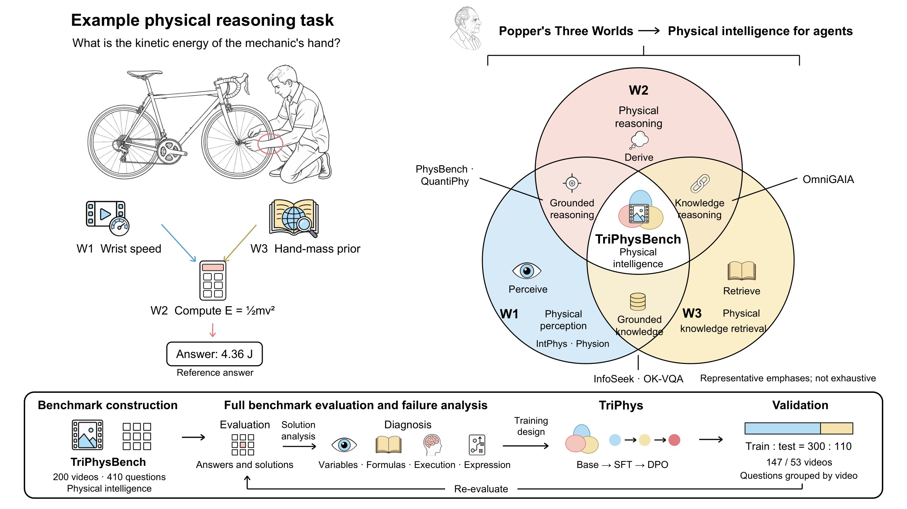
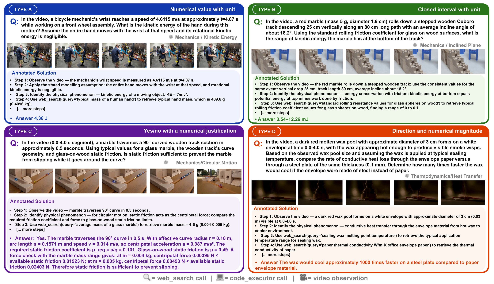
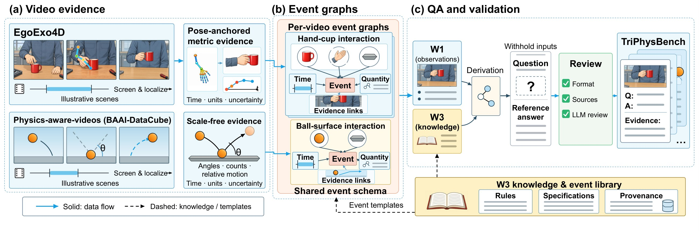
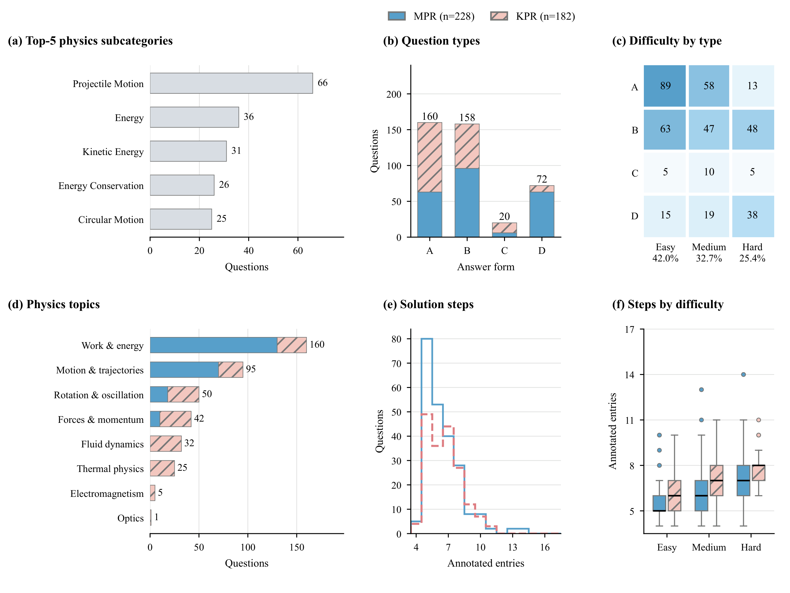
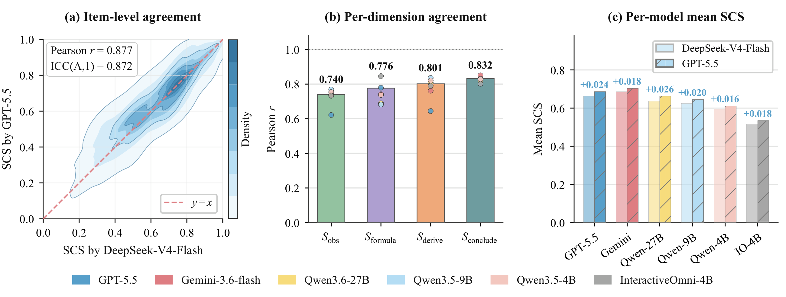
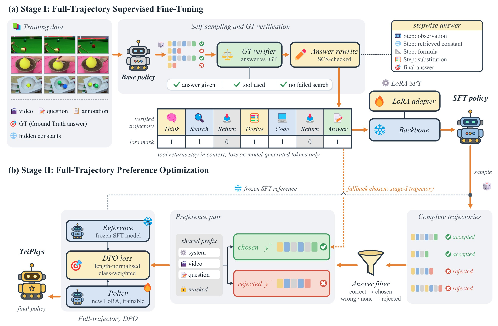

Evaluating Physical Intelligence for Embodied Agents
Embodied agents need physical intelligence: they must perceive a physical scene, retrieve the physical knowledge it calls for, and reason quantitatively about it. Inspired by Popper's Three Worlds, TriPhysBench brings these three capabilities into one evaluation setting. Every question is grounded in a real-world video and can only be solved by combining what is seen, what is known and what is derived.
Recover speeds, angles, counts and timings from the video.
Search for the masses, dimensions and material constants that match the observed object.
Choose an applicable relation, then derive and compute the answer with units.

| Benchmark | Real-world video | Physical reasoning | Knowledge retrieval | Quantitative physics | External tools | Process evaluation | Answer type |
|---|
Quantitative physics requires open-form numerical or symbolic outputs; process evaluation scores more than the final answer. MC: multiple choice.
The two subtasks withhold different inputs. In MPR the solver must measure what the question leaves out; in KPR the observations are stated and the solver must look up the specifications the question leaves out.
90 EgoExo4D recordings of skilled activities such as bicycle repair and sports.
110 recordings from BAAI-DataCube Physics-aware-videos: collisions, oscillations, fluids, deformation, heat.

Video evidence is localized and measured, then organized into a physical event graph. Questions are generated by withholding observations or specifications from the graph, and every question passes LLM review and rule-based checks before release.

| Statistic | MPR | KPR | Total |
|---|---|---|---|
| Videos | 90 | 110 | 200 |
| Questions | 228 | 182 | 410 |
| Physics subcategories | 32 | 70 | 94 |
| Easy / Medium / Hard | 82 / 77 / 69 | 90 / 57 / 35 | 172 / 134 / 104 |
| Train videos / questions | 66 / 167 | 81 / 133 | 147 / 300 |
| Test videos / questions | 24 / 61 | 29 / 49 | 53 / 110 |
The 110 test questions come from 53 videos that never appear in training. No test question shares a video, a source question or a withheld value with the 300 training questions, so the held-out set measures transfer to unseen scenes.

Every model gets the same system prompt and solves each question in a native tool loop with
web_search and code_executor, for at most six turns. We score the final answer and
the solution that produced it.
Answer correctness with partial credit, by answer form: relative error for points, interval overlap for intervals, label match for judgments, and direction plus magnitude for comparisons.
Solution score from an LLM judge (DeepSeek-V4-Flash) that compares the solution with the annotated reference steps.
Overall score. Results are reported separately for MPR and KPR and over all questions.
We re-scored all 410 questions for six models with a judge from another model family (GPT-5.5). The two judges agree closely:
Three independent LLM reviewers also agree on 95.6% of question-quality checks.

Zero-shot results of six VLMs on all 410 questions, and results on the 110 held-out test questions including the three TriPhys models.
The strongest model, Gemini-3.6-Flash, answers barely half of the questions correctly on the full benchmark.
Variable identification fails in most solutions, across every model and subtask. Getting the inputs right is the bottleneck.
Relation selection rarely fails: models usually know which formula applies, but not which values to plug in.
TriPhys trains a single policy that perceives, retrieves and reasons within one trajectory. It needs no task-specific routing: the backbone learns from verified successful trajectories, then from preference pairs over full trajectories.

# install git clone https://github.com/yangch0429/TriPhys.git && cd TriPhys pip install -r requirements.txt cp .env.example .env # video roots + API keys # evaluate (Qwen / InteractiveOmni / any OpenAI-compatible API) python evaluation/eval_qwen.py --base_model Qwen/Qwen3.5-4B --out results/qwen35_4b.jsonl python evaluation/eval_api.py --model gemini --out results/gemini36flash.jsonl # score and report MPR / KPR / Overall python evaluation/rescore.py results/qwen35_4b.jsonl python evaluation/aggregate.py results/qwen35_4b*.jsonl --out results/qwen35_4b_summary.json # train TriPhys (Stage I SFT -> Stage II DPO) export TRIPHYS_WORK=/path/to/work && bash training/setup_work.sh && bash training/run_4b.sh
Videos are not redistributed. The required EgoExo4D takes and Physics-aware-videos files are listed in data/videos_mpr.txt and data/videos_kpr.txt; see the README for the expected directory layout.
@article{sun2026triphysbench,
title = {TriPhysBench: Evaluating Physical Intelligence for Embodied Agents},
author = {Sun, Zhongxiang and Yang, Chenghao and Ding, Haojie and Zhang, Boheng and Yang, Fan and Wen, Qingsong and Wang, Kun},
year = {2026}
}